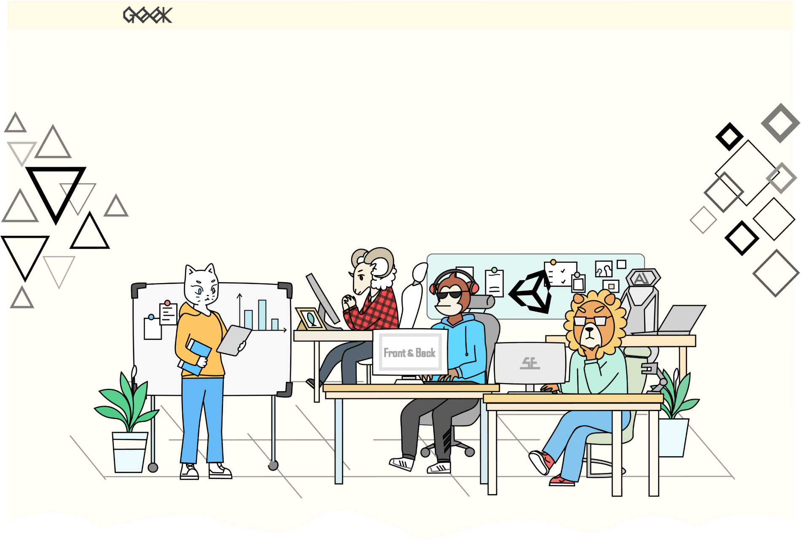

前端：前端开发是创建Web或app视觉界面呈现给用户的过程通过HTML，CSS及JavaScript以及衍生出来的各种技术、框架、解决方案，实现互联网产品的用户界面交互。
后端：通常也称服务器端开发。不对用户显示,负责处理前端的请求，进行逻辑处理和数据交互。 客户端: 移动应用开发是为了小型、无线计算设备编写软件的流程和程序的集合，例如智能手机或平板电脑。

PM是针对某一项或是某一类的产品进行规划和管理的人员。PM需要拥有缜密的产品逻辑思维，研究用户心理，负责产品的整个生命周期。PM参与产品的UI和交互设计，为设计和开发确定产品原型，能够将产品变得有个性,操作变得舒适简单、自由。PM需要一定的文档能力和沟通能力，能够在团队合作的过程中跟各个角色进行有效沟通。

对游戏开发的热爱和追求，使我们相聚于此。 涉及计算机图形学的学习，我们使用物理模拟引擎Unity开发我们所追求的世界，一个故事，一个角色，在我们的世界里改变现实，创造新的可能，我们参与，我们改变，我们创造...

我们主要学习Web安全和二进制安全。在Web安全中我们将学习和实践Web漏洞挖掘技术，也将探索和讨论Web安全实践的方法。在二进制安全中我们专注于分析和防御与计算机程序、系统相关的威胁，同时实践漏洞分析和修补。耐心和钻研缺一不可。
About us

每周我们会举行一次技术例会，用来汇报我们的学习内容，供成员之间交流学习。

多元化是我们的特色。在这里，你可以拥有多种方向选择，前后端、安全、AI、产品/设计、游戏等。

耐心、毅力是我们必备的品质，每周我们会至少花30小时在实验室中。以保证技术的精进。


Contact Us


•热爱计算机，具有geek精神，喜欢DIY，动手能力较强
•有编程/算法/硬件基础为佳(有作品可附上)
•有足够的空余时间，热爱思考，对事物有自己的见解
ps:非新思路统招只有通过发送邮件自我介绍后，收到邮件回执后才会被允许进群,在读学生, 都可邮件到newthread_geek@outlook.com报名加入.(信中需备注个人基本信息以及意向方向,此招新活动为长期招新)
More Questions